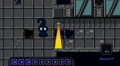
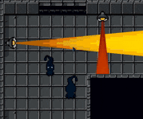

Un puzzle top-down donde la luz puede matarte… o ayudarte. Jugás como Shawy, una pequeña criatura de sombra que intenta escapar de una instalación humana usando lógica y planificación. Y cada muerte, en vez de castigarte, te da una herramienta nueva.
Shadows arrancó de una pregunta simple: ¿y si el enemigo más obvio de una criatura de sombra —la luz— fuera también su recurso más útil?
El jugador controla a Shawy, que se escapó de su celda en un complejo humano de investigación y quiere volver al Abismo, su lugar de origen. En cada nivel hay que bloquear, reflejar y redirigir la luz para abrir caminos y activar mecanismos. La misma luz que resuelve el puzzle es la que te mata si la tocás sin cuidado. Esa tensión —recurso y amenaza en el mismo objeto— es el corazón de cada nivel.
Cada haz sirve para avanzar y para matarte. El jugador nunca la elimina: aprende a convivir con ella y a usarla a su favor.
La muerte no reinicia sin más: corrompe el piso y desbloquea casillas nuevas donde colocar ShadowBlocks. El fracaso construye la solución.
Es un puzzle de planificación. Ganás pensando la secuencia, no apretando rápido. Cada nivel es un pequeño teorema.
"Tu muerte también es una herramienta: cada vez que morís, el piso se corrompe y desbloquea casillas nuevas donde podés colocar ShadowBlocks."
En un puzzle, morir suele significar "volvé a empezar". Eso castiga al jugador y corta el ritmo. Buscábamos que el error fuera información y progreso, no un muro.

Cada muerte deja el terreno corrompido y habilita casillas donde el jugador coloca ShadowBlocks para bloquear o redirigir la luz. Así, un nivel imposible al primer intento se vuelve resoluble a medida que el jugador "invierte" muertes estratégicas. El fracaso se transforma en la mecánica de avance.

Casi nada salió bien al primer intento. Estas son las cuatro veces que tuvimos que volver atrás y rehacer algo que ya funcionaba, porque funcionar no alcanzaba: el jugador no lo entendía, o no lo disfrutaba.
Arrancamos con las luces que Unity trae hechas. Servían para iluminar, pero en Shadows la luz es lo que jugás: tenés que poder mirar un haz y saber en el acto hasta dónde llega, dónde termina la sombra y qué pasa si ponés un bloque en el medio. Con esas luces el jugador nunca terminaba de leer el espacio.
Terminé rehaciendo el sistema de luz entero para que se comportara como un objeto físico: choca contra las paredes, la sombra que proyecta un bloque es real y la podés usar como refugio. Recién ahí el nivel se volvió algo que se puede planificar mirando.
Ese cambio me habilitó una segunda luz: la roja, que no perdona —te destruye el bloque al instante—. Es la que convierte algunos niveles en una carrera y no en un problema tranquilo.
A mitad del proyecto cambiamos todo el estilo visual a pixel art. El grueso del arte lo llevaron Jesús y Agustín; a mí me tocaron algunos tiles y los iconos de la interfaz, y me costaron bastante más de lo que imaginaba. Tenían que resolver dos cosas a la vez: que entiendas de un vistazo qué hace cada objeto, y que el lugar siga sintiéndose oscuro y opresivo. Los primeros intentos fueron un desastre y hubo que rehacerlos varias veces.
La prueba de que estaba bien era simple: si alguien que nunca jugó mira la pantalla y sabe qué lo va a matar, funciona.
Al principio el jugador tenía una sola cosa para hacer: poner un bloque que tapa la luz. Alcanzaba para unos cuantos niveles, pero se agotaba rápido.
Fui sumando herramientas que cambian la pregunta que te hace el nivel. El bloque reflectante te deja mandar la luz a otro lado en vez de apagarla, así que de golpe la luz también es tuya. La Llama del Abismo es una llama que manejás por separado, atraviesa lo que tu personaje no puede y corrompe el suelo donde se apaga: te deja preparar el terreno a distancia. Y el teletransporte corto rompe la idea de que sólo se avanza caminando.
Cada una entra con su propio nivel-tutorial y después se combinan. Ese es el arco real del juego: no que los puzzles se hagan más grandes, sino que tengas más formas de mirarlos.
Shadows tiene reglas que nadie espera: que convenga morir, que la luz se pueda reflejar, que el piso donde moriste sea justamente donde después vas a construir. Puesto en un cartel, suena a instructivo y corta el clima.
Terminé poniendo NPCs que resuelven el nivel adelante tuyo y recién después te dan la habilidad. Aprendés mirando a otro hacerlo, que es como se aprende todo. Sumé también una previsualización al colocar bloques, porque en el playtesting se veía a la gente gastando bloques por no saber dónde iban a caer.
El playtesting que hicimos entre los tres fue el que marcó casi todos estos cambios: ahí se nota rápido qué se entiende solo y qué no.
"Subestimé la carga horaria y dejé la producción de assets para la última etapa. La build de la beta salió menos pulida de lo que queríamos."


Desarrollado en Unity con C# por un equipo de tres (HYN Interactive) para la materia de Diseño de Videojuegos, UADE. Arte en pixel art. Sin uso de IA generativa.
Nos repartimos el trabajo entre los tres: a mí me tocó sobre todo programar —el personaje, las luces, las habilidades y la interfaz—, mientras Jesús y Agustín se ocuparon del pixel art, las animaciones y buena parte de los niveles. Las mecánicas y el diseño de los niveles los fuimos discutiendo entre todos.